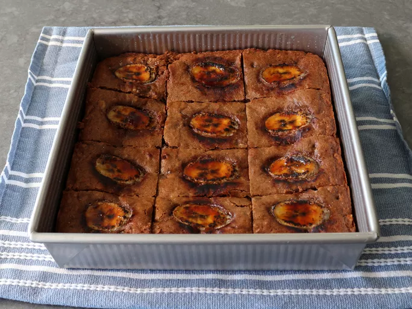

<!DOCTYPE htmll>
<html lang="en">
<head>
    <meta charset="UTF-8">
    <meta name="viewport" content="width=device-width, initial-scale=1.0">
    <title>Banana Bread Brownies</title>
    <link rel="stylesheet" href="styles.css">
</head>
</html>
    <body><h1>Banana Bread Brownies</h1>
    
    <h3>Description</h3>
    <p>These banana bread brownies are chocolate brownies that taste like banana bread, and have the chewy, fudgy texture of a brownie. As an added bonus, you'll learn how to brulee a banana for an extra-special finishing touch.</p>
    <h2>Ingredients</h2>
    <ul>
        <li>1 3/4 cups all-purpose flour</li>
        <li>1 teaspoon baking powder</li>
        <li>1 teaspoon baking soda</li>
        <li>1 teaspoon kosher salt</li>
        <li>2 ounces dark chocolate, broken into pieces</li>
        <li>1 cup white sugar</li>
        <li>1/2 cup unsalted butter, at room temperature</li>
        <li>1 large egg</li>
        <li>2 very ripe bananas, mashed (about 1 cup)</li>
        <li>1/4 teaspoon vanilla extract</li>
        <li>1/2 cup chopped walnuts</li>
        <li>1/2 cup semisweet chocolate chips</li>
        <li>12 slices banana</li>
        <li>2 tablespoons white sugar (optional, for banana brulee)</li>
    </ul>
    <h3>Directions</h3>
    <ol>
        <li>Preheat the oven to 350 degrees F (175 degrees C). Generously butter a 9x9-inch square pan. A piece of parchment paper can also be added to the bottom of the pan to prevent sticking.</li>
        <li>Whisk flour, baking powder, baking soda, and salt together in a bowl; set aside.</li>
        <li>Melt chocolate in a microwave-safe glass or ceramic bowl in 15-second intervals, stirring after each interval, 1 to 3 minutes</li>
        <li>Beat butter and sugar together in a large bowl with an electric mixer until light and fluffy. Add egg, vanilla, and mashed banana, and beat until combined. Add chocolate, and beat until mixture is well combined and smooth</li>
        <li>Use a spatula to mix in walnuts and chocolate chips, then use the spatula to mix in flour just until flour disappears. Transfer batter into the prepared pan and smooth top. Place banana slices on top, evenly spaced in a grid pattern.</li>
        <li>Bake in the preheated oven until a skewer comes out almost clean but with some batter on the very tip. If you want fudgier brownies, do not overcook.</li>
        <li>Let brownies cool in the pan. Cover, refrigerate until cold, about 1 hour, and serve chilled.</li>
        <li>For optional banana brûlée: While brownies are cooling, cover each banana slice with a half teaspoon of sugar. Use a propane kitchen torch to melt the sugar until dark brown and bubbling. Be careful not to char the edges of the crust around the banana too much. This banana brûlée step can also be done before the brownies go into the oven.</li>
    </ol> 
    <a href="../index.html">Home</a></body>
